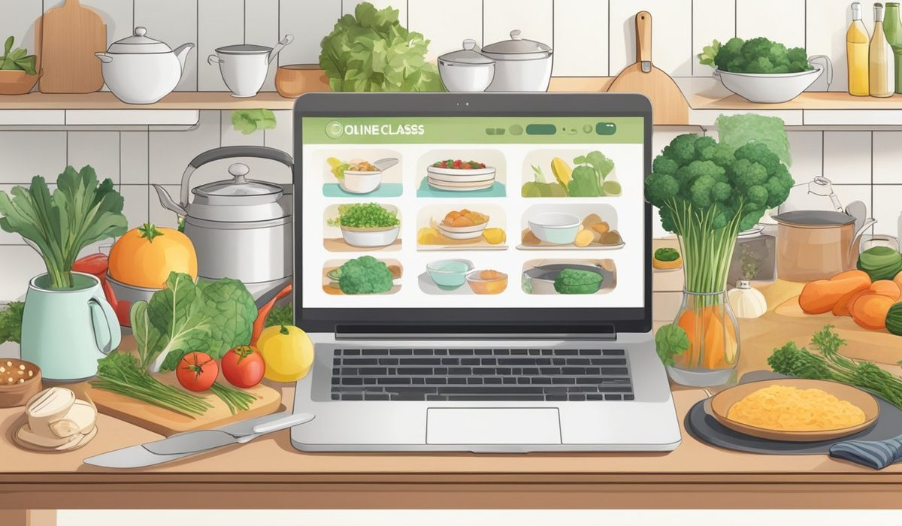

En bref
À la question « L'atelier des Chefs ou YouSchool pour un CAP cuisine ? », notre comparatif 2026 répond L'atelier des Chefs, avec une note de 8,9/10 contre 8,6/10. L'écart tient à la pratique, exercices filmés corrigés par des professionnels, ateliers en présentiel possibles et CFA intégré pour partir en apprentissage. YouSchool reste devant sur le prix, 1 890 € contre 2 390 €, sur la souplesse des rentrées et sur la vie de sa communauté d'élèves. Le CNED complète le podium à 8,4/10 et reste la voie la moins chère à 990 €.
- L'atelier des Chefs annonce 560 heures de programme sur le CAP cuisine, contre 480 heures chez YouSchool
- Le CAP cuisine coûte 2 390 € chez L'atelier des Chefs et 1 890 € chez YouSchool, pour un même diplôme d'État de niveau 3
- Les deux écoles sont éligibles au CPF, avec la participation forfaitaire de 102,23 € par dossier depuis mai 2024
- Seul L'atelier des Chefs dispose d'un CFA, ce qui ouvre la voie de l'apprentissage et donc du coût zéro pour l'élève
- L'examen se passe en candidat libre auprès de l'académie dans les deux cas, aucune des deux écoles ne délivre le diplôme
Sommaire de ce comparatif
Ce qui sépare vraiment les deux écoles
Les deux écoles préparent au même diplôme, un CAP cuisine de niveau 3, passé en candidat libre devant l'académie. La différence ne se joue donc pas sur le parchemin, elle se joue sur ce qui se passe entre l'inscription et la convocation à l'épreuve pratique.
Et sur ce terrain, les deux modèles ne se ressemblent pas.
01 La meilleure préparation pratique560 heures, exercices corrigés par des chefs8,9/10
La meilleure préparation pratique560 heures, exercices corrigés par des chefs8,9/10
La meilleure préparation pratique560 heures, exercices corrigés par des chefs8,9/1002 Le meilleur rapport prix et souplesse1 890 €, rentrée à tout moment8,6/10
Le meilleur rapport prix et souplesse1 890 €, rentrée à tout moment8,6/10
Le meilleur rapport prix et souplesse1 890 €, rentrée à tout moment8,6/1003 La troisième voie, la moins chère990 €, opérateur public8,4/10
La troisième voie, la moins chère990 €, opérateur public8,4/10
La troisième voie, la moins chère990 €, opérateur public8,4/10L'atelier des Chefs vient du cours de cuisine en salle. Quatre ateliers tournent encore, trois à Paris et un à Lyon, et l'école bascule vers la formation digitale depuis 2017 sans avoir coupé le lien avec ses chefs. Cela se voit dans le programme du CAP cuisine, où chaque technique donne lieu à une vidéo envoyée par l'élève et reprise par un professionnel qui pointe la découpe, le dressage et le respect du temps.
YouSchool a construit l'inverse, un parcours entièrement à distance, pensé pour un adulte qui travaille. On entre quand on veut, on avance quand on peut, et la plateforme s'appuie sur une communauté d'élèves très vivante qui joue le rôle de la promotion. Le tarif suit cette logique, 500 € de moins que chez L'atelier des Chefs pour un programme plus court de 80 heures.
Le CNED reste la troisième voie. À 990 €, l'opérateur public divise la facture par deux, mais il laisse l'élève seul face à son planning et ne propose ni atelier ni correction filmée. C'est un choix qui se défend quand on sait déjà tenir un rythme de travail sans personne derrière soi.
Le tableau critère par critère
Chaque ligne correspond à un critère de préparation au CAP cuisine, avec ce que chaque école annonce sur son site officiel. Le poids indiqué dans la deuxième colonne est celui que nous appliquons dans notre note globale de l'univers cuisine.
| Critère | Note /10 | L'atelier des Chefs | YouSchool | Écart | Qui gagne |
|---|---|---|---|---|---|
| Exercices pratiques corrigésNotre choix | 9 | Vidéos d'élève corrigées une par une par un chef | Corrections écrites sur photos envoyées | Net | L'atelier des Chefs |
| Ateliers en présentiel | 8 | 4 ateliers, 3 à Paris et 1 à Lyon | Aucun | Net | L'atelier des Chefs |
| Apprentissage possible | 8 | CFA intégré, contrat d'apprentissage possible | Pas de CFA | Net | L'atelier des Chefs |
| Volume horaire | 8 | 560 heures | 480 heures | 80 heures | L'atelier des Chefs |
| Aide à la recherche de stage | 7 | Convention et mise en relation avec le réseau d'ateliers | Convention fournie, recherche à la charge de l'élève | Moyen | L'atelier des Chefs |
| Formateurs joignables | 7 | Chef référent, réponse annoncée sous 24 h | Coachs par messagerie, réponse annoncée sous 48 h | Faible | L'atelier des Chefs |
| Souplesse des rentrées | 7 | Entrée mensuelle | Entrée à tout moment de l'année | Moyen | YouSchool |
| Tarif du CAP cuisine | 8 | 2 390 € | 1 890 € | 500 € | YouSchool |
| Communauté d'élèves | 6 | Groupe modéré par promotion | Réseau social interne très actif | Moyen | YouSchool |
| Financement CPF | 8 | Éligible, dossier monté avec l'école | Éligible, dossier monté en ligne | Nul | Égalité |
Programmes, volumes horaires et tarifs relevés sur les sites officiels des deux écoles en septembre 2026. La colonne Note /10 indique le poids de chaque critère dans notre note globale de l'univers cuisine.

Trois choses ressortent de ce tableau. D'abord, L'atelier des Chefs gagne tous les critères liés au geste, ce qui pèse lourd sur un diplôme dont l'épreuve reine dure plus de cinq heures en cuisine réelle. Ensuite, YouSchool remporte les critères liés au confort de l'élève adulte, le prix, l'entrée à tout moment et la vie du groupe. Enfin, sur le financement, les deux écoles font jeu égal, la participation forfaitaire de 102,23 € s'applique dans les deux cas et un solde CPF moyen de 1 600 € couvre une bonne part de la facture.
La pratique et le stage font la décision
Un CAP cuisine ne se rate pas sur la technologie culinaire, il se rate sur l'épreuve pratique. Le jury regarde une organisation, un tranchage, une cuisson, une sauce montée au bon moment et une assiette envoyée dans le temps imparti. Aucun cours écrit ne prépare à cela.
- L'atelier des Chefs demande une vidéo par technique et la fait reprendre par un chef, qui renvoie une correction commentée avec les points bloquants pour le jury
- YouSchool travaille sur photos et fiches d'auto-évaluation, avec un retour écrit du coach, ce qui suffit pour le dressage mais montre ses limites sur le geste et le timing
- Les ateliers de Paris et de Lyon restent ouverts aux élèves de L'atelier des Chefs qui veulent passer une journée en cuisine avant l'examen, une option qui n'existe pas chez YouSchool
- Le stage représente 12 à 14 semaines en voie scolaire et reste la vraie difficulté pour un candidat à distance, car c'est lui qui doit démarcher les établissements
Un candidat libre qui arrive à l'épreuve pratique sans avoir jamais été corrigé en situation découvre le chrono le jour J. C'est là que se creuse l'écart entre les deux écoles, bien plus que dans le nombre d'heures de cours.
Sur le stage, L'atelier des Chefs s'appuie sur son réseau d'ateliers et sur ses chefs partenaires pour orienter les élèves vers des cuisines qui acceptent des conventions. YouSchool fournit la convention et un guide de recherche, mais laisse le démarchage à l'élève. La différence paraît administrative, elle ne l'est pas, c'est souvent le point où un parcours à distance s'enlise.
Reste le CFA. L'atelier des Chefs est la seule des deux à en avoir un, ce qui ouvre le contrat d'apprentissage. Pour un jeune de moins de 26 ans, cela change tout, la formation ne coûte plus rien et le stage devient un poste salarié.
Le prix et le financement du CAP cuisine
Les deux écoles affichent un tarif tout compris pour le CAP cuisine, hors frais d'inscription à l'examen auprès de l'académie, qui restent à la charge du candidat. Nous avons ajouté le CNED en référence de bas de marché.
| École | Tarif CAP cuisine | Volume horaire | Coût horaire | Reste à charge avec 1 600 € de CPF |
|---|---|---|---|---|
| CNED | 990 € | 400 heures | 2,48 € | 0 € |
| YouSchool | 1 890 € | 480 heures | 3,94 € | 392,23 € |
| L'atelier des Chefs | 2 390 € | 560 heures | 4,27 € | 892,23 € |
Tarifs relevés sur les sites officiels des trois écoles en septembre 2026. Le reste à charge intègre la participation forfaitaire de 102,23 € par dossier CPF appliquée depuis mai 2024.
Le coût horaire range les trois écoles dans un ordre logique, mais il ne dit pas tout. Les 500 € qui séparent YouSchool de L'atelier des Chefs achètent 80 heures de programme, les corrections filmées et la possibilité d'un atelier en présentiel. Pour un reconverti qui n'a jamais travaillé en brigade, c'est un investissement rentable. Pour un cuisinier déjà en poste qui vient chercher le diplôme, c'est une dépense discutable.
Sur le montage du dossier, L'atelier des Chefs accompagne le candidat, ce qui compte quand le financement passe par France Travail, un OPCO ou un employeur. YouSchool traite tout en ligne, plus vite, avec moins de main tenue.
Lequel choisir selon votre profil
Si vous êtes salarié en poste
YouSchool, dans la plupart des cas. L'entrée à tout moment et le rythme entièrement libre valent mieux qu'un atelier parisien que vous n'irez jamais faire un samedi. Les 1 890 € passent sous un solde CPF moyen de 1 600 €, avec 392,23 € de reste à charge. Prévoyez le stage sur vos congés, c'est le vrai point dur de ce profil.
Si vous êtes demandeur d'emploi
L'atelier des Chefs. Vous avez le temps de suivre un programme de 560 heures et vous avez surtout besoin d'un dossier bien monté, car le financement passe souvent par France Travail plutôt que par le seul CPF. L'accompagnement administratif et l'aide à la recherche de stage justifient les 500 € d'écart sur ce profil précis.
Si vous avez moins de 26 ans
L'atelier des Chefs, sans hésiter, pour une seule raison, le CFA. Le contrat d'apprentissage ramène le coût de la formation à zéro pour vous, votre employeur prend le relais et votre période en entreprise devient rémunérée. YouSchool ne propose pas cette voie, l'écart de tarif perd tout son sens.
Si vous visez une reconversion complète
L'atelier des Chefs, et prenez les ateliers en présentiel si vous êtes à portée de Paris ou de Lyon. Une reconversion depuis un métier de bureau se joue sur la vitesse d'exécution et sur la tenue d'un service, deux choses qu'aucune fiche PDF n'enseigne. Si vous habitez loin et que le budget est serré, YouSchool reste un bon second choix, à condition de trouver vous-même une cuisine qui accepte de vous faire travailler avant l'examen.
Notre verdict
Pour un CAP cuisine, nous plaçons L'atelier des Chefs devant avec 8,9/10, contre 8,6/10 à YouSchool. L'avance est courte et elle repose sur trois points vérifiables, les exercices pratiques corrigés un par un par des professionnels, les ateliers en présentiel ouverts aux élèves et le CFA intégré qui ouvre l'apprentissage. Sur un diplôme dont l'épreuve décisive se joue le couteau à la main, ces trois points pèsent plus que 500 € de différence.
Si le budget commande ou si votre emploi du temps est imprévisible, prenez YouSchool, qui gagne le prix, la souplesse des rentrées et la vie de sa communauté. Si vous avez moins de 26 ans, prenez L'atelier des Chefs en apprentissage, la formation ne vous coûtera rien. Si vous savez travailler seul et que chaque euro compte, le CNED délivre la même préparation académique à 990 €, sans aucun accompagnement pratique.
Questions fréquentes
L'atelier des Chefs ou YouSchool pour un CAP cuisine ?
L'atelier des Chefs obtient 8,9/10 dans notre comparatif 2026, contre 8,6/10 pour YouSchool. L'atelier des Chefs gagne sur la pratique, avec 560 heures de programme, des exercices filmés corrigés par des chefs et des ateliers en présentiel à Paris et à Lyon. YouSchool reste devant sur le tarif, 1 890 € contre 2 390 €, et sur la souplesse des rentrées.
Quelle est la différence entre L'atelier des Chefs et YouSchool ?
L'atelier des Chefs vient du cours de cuisine en salle et garde quatre ateliers physiques, un CFA et des corrections vidéo faites par des professionnels. YouSchool est une école 100 % à distance, avec une entrée à tout moment de l'année, une communauté d'élèves très active et un tarif inférieur de 500 €. Les deux préparent au même CAP cuisine de niveau 3, passé en candidat libre auprès de l'académie.
Combien coûte un CAP cuisine chez L'atelier des Chefs et chez YouSchool ?
Le CAP cuisine est affiché à 2 390 € chez L'atelier des Chefs et à 1 890 € chez YouSchool en septembre 2026. Les deux formations sont éligibles au CPF, avec la participation forfaitaire de 102,23 € par dossier. Avec un solde CPF moyen de 1 600 €, le reste à charge tombe à 892,23 € chez L'atelier des Chefs et à 392,23 € chez YouSchool.
Peut-on faire un CAP cuisine en apprentissage avec ces écoles ?
Seul L'atelier des Chefs dispose d'un CFA, ce qui rend le contrat d'apprentissage possible. Pour un jeune de moins de 26 ans, la formation devient gratuite et la période en entreprise est rémunérée. YouSchool ne propose pas cette voie et reste sur un financement personnel, CPF ou employeur.
Combien de temps dure un CAP cuisine à distance ?
Comptez 480 heures chez YouSchool et 560 heures chez L'atelier des Chefs, à répartir sur 12 à 18 mois selon votre rythme. Avec des dispenses d'enseignement général, obtenues grâce à un diplôme déjà détenu, le parcours peut descendre à 6 mois. Les deux écoles laissent l'élève fixer son planning.
Le stage est-il obligatoire pour le CAP cuisine ?
Oui, l'épreuve professionnelle suppose une période en milieu professionnel de 12 à 14 semaines en voie scolaire, et c'est au candidat à distance de la décrocher. L'atelier des Chefs oriente ses élèves vers son réseau d'ateliers et de chefs partenaires, YouSchool fournit la convention et un guide de recherche mais laisse le démarchage à l'élève.
Notre méthode
Ce comparatif repose sur des données publiques, vérifiables une par une.
- Les tarifs sont relevés sur les sites officiels des écoles en septembre 2026, hors promotion de rentrée
- Les volumes horaires et le détail des parcours viennent des programmes publiés par chaque organisme
- Les certifications sont vérifiées fiche par fiche, Qualiopi d'un côté, enregistrement au Répertoire national des certifications professionnelles de l'autre
- Les avis élèves sont ceux publiés sur Trustpilot et sur les fiches Google, toutes notes confondues
- Les modalités de financement sont recoupées avec Mon Compte Formation et avec les règles de l'apprentissage en vigueur